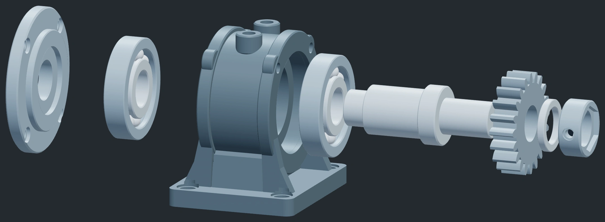
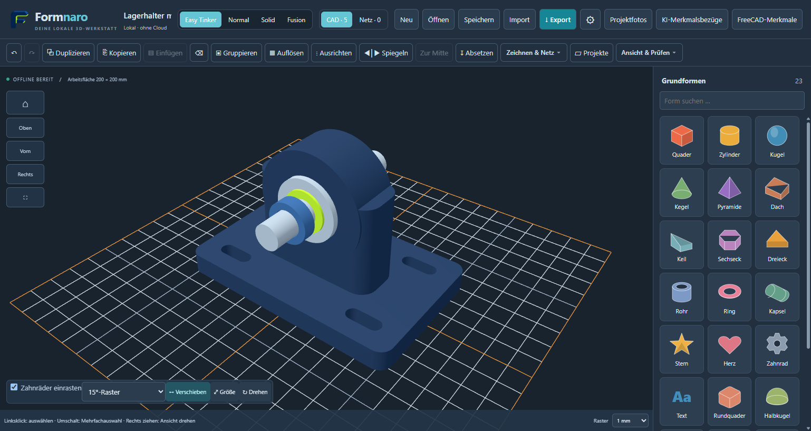
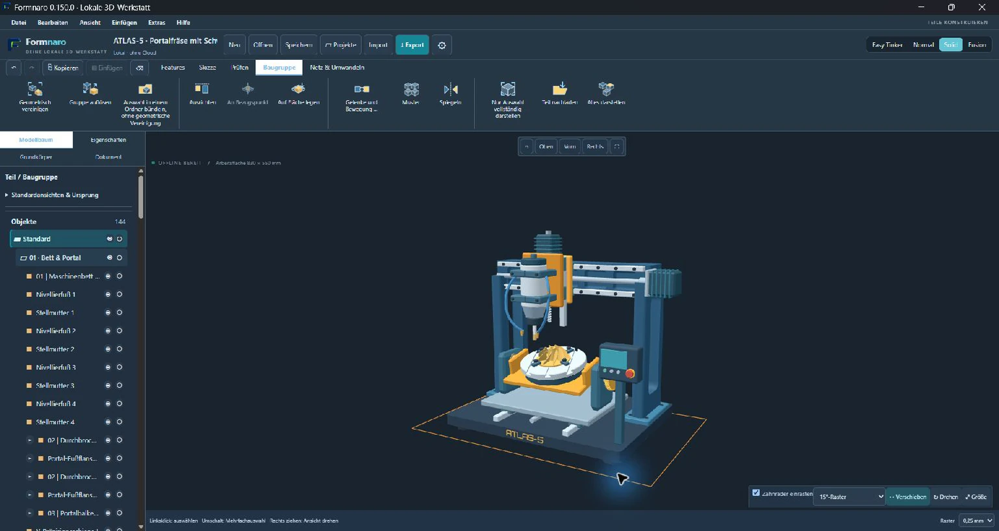
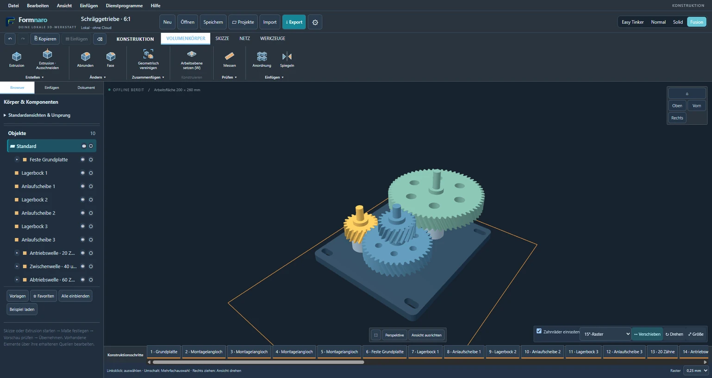

3D-CAD für
deine Werkstatt.
Konstruiere Bauteile, repariere Netze und baue bewegliche Baugruppen. Formnaro läuft lokal unter Windows.
Windows-Download ↗
Übungs-Show-Modus
Sieh, wie die KI eine Änderung an dem Modell vorführt, an dem du gerade arbeitest. Die Schritte laufen in einer separaten Projektkopie. Nach der Vorschau entscheidest du, ob du das Ergebnis in dein geöffnetes Modell übernimmst.
Formnaro kennenlernen
Beispielmodelle und Bedienmodi
Beispielprojekt · Mechanik
ATLAS-5 in Bewegung
Bei der fünfachsigen Portalfräse zeigt sich, was Gelenke und Kopplungen bringen: Der Werkzeugkopf verfährt, der Rundtisch dreht sich, und beim Schwenken der Wiege läuft das Ritzel im Verhältnis 48:20 mit.
- 144 Bauteile
- 78 Gelenke
- 5 Achsen
Die Aufnahme zeigt die Gelenkbewegung in Formnaro. Am Beispielmodell kannst du die Achsen selbst verstellen.
Bearbeitbares Beispiel laden ↗Vier Modi in der Praxis
Aufgenommen mit einer Entwicklungsversion von Formnaro. Klicke auf ein Bild, um die Werkzeugleiste in voller Größe zu sehen.







STL-zu-STEP und Konstruktionswerkzeuge
STL to CAD · STL → STEP
Ein STL-Modell weiterkonstruieren.
Du hast einen Halter als STL und willst eine weitere Bohrung setzen? Eine STL beschreibt die Oberfläche mit Dreiecken. Der lokale Konverter versucht, daraus wieder CAD-Flächen wie Ebenen und Zylinder aufzubauen. So kannst du geeignete Modelle als Volumenkörper weiterbearbeiten.
Zuerst lokal prüfen
Formnaro erstellt einen lokal geprüften STEP-Kandidaten. Eine gültige CAD-Vorschau kann ohne KI-Anfrage bereitstehen.
Ergebnis vergleichen
Lege Original und Ergebnis übereinander und prüfe die angezeigten Abweichungen in Millimetern. Der Konverter prüft die erzeugte STEP auch durch erneutes Einlesen.
Als CAD weiterarbeiten
Speichere das Ergebnis als STEP oder übernimm es nach der Vorschau direkt in dein Formnaro-Projekt. Die Konvertierung läuft lokal.
Die ursprünglichen Skizzen und Konstruktionsschritte stecken nicht in der STL. Offene oder beschädigte Netze müssen gegebenenfalls zuerst repariert werden.
Konverter-Anleitung auf GitHub ↗Werkzeuge für dein Projekt
- KonstruierenZeichne bemaßte Skizzen und extrudiere sie zu Körpern oder Ausschnitten. Setze Bohrungen, Rundungen, Fasen und Muster. Mit Loft verbindest du verschiedene Profile, mit Sweep führst du ein Profil entlang eines Pfads. Maße lassen sich über Parameter und Formeln steuern.
- Netze bearbeitenFinde offene Kanten in importierten Netzen und schließe geeignete Löcher. Wähle einzelne Dreiecke oder ganze Flächenbereiche aus, reduziere die Dreieckszahl oder glätte ausgewählte Stellen. Du kannst Bereiche vor Änderungen schützen und das Ergebnis mit dem Original vergleichen.
- Zeichnungen und StücklistenErstelle Ansichten, Schnitte und Bemaßungen und gib Zeichnungen als PDF, SVG oder DXF aus. Halte Material und Masse in der CSV-Stückliste fest und zeige den Aufbau einer Baugruppe in einer Explosionsansicht.
- Modelle austauschenNutze STEP für den Austausch von CAD-Körpern, STL und 3MF für den 3D-Druck sowie OBJ und GLB/glTF für die Weiterarbeit mit Netzmodellen und 3D-Ansichten.